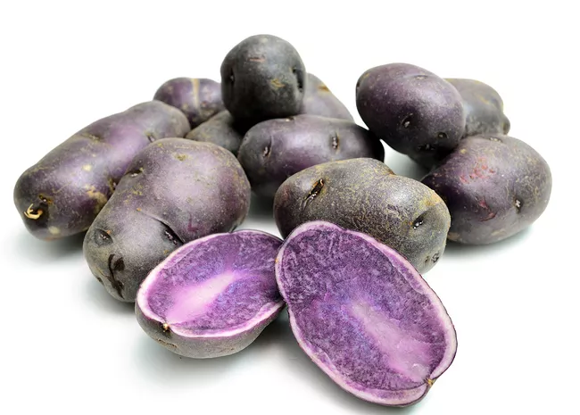

PATATE DELEVIGNE

Description
Finger licking pan roasted purple potatoes
Ingredients
- Potatoes
- Butter
- Peanut Oil
- Vinegar
- Salt and Pepper
- Thyme, Rosemary, Sage
Steps
- Boil the Potatoes for around 15 minutes in water and vinegar
- Drain them and move in a pan with hot butter and peanut oil
- Add the salt and pepper and part of the aromatics
- When the potatoes are near ready, add some more thyme, rosemary and sage
Home